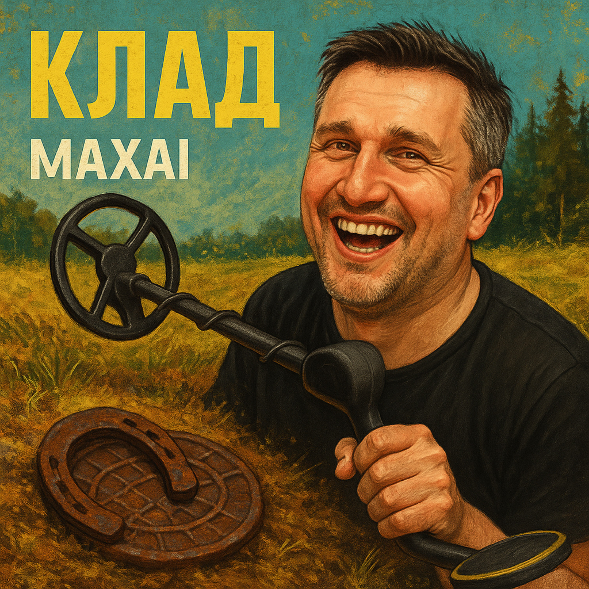

28.08.2025
Я давно ищу клады в земле,
Нет покоя мне с этим нигде.
На рыбалке, в гостях и в лесу —
Металлоискатель всегда я несу!
Где-то рядом — сигнал зазвенит,
Сердце рвётся, душа вся горит.
Может быть, это клад королей?..
А в итоге — лишь гвоздь от саней.
Под окном у соседей копал,
Думал — золото, слиток попал!
А нашёл только медный пятак,
Не угаснет азарт мой никак!
Где-то рядом — сигнал зазвенит,
Сердце рвётся, душа вся горит.
Может быть, это клад королей?..
А в итоге — лишь гвоздь от саней.
Но однажды — сигнал, словно гром!
Я ору: «Здесь сундук с серебром!»
А в ответ — голос друга с тоской:
«Ты нашёл крышку люка, родной…»
Где-то рядом — сигнал зазвенит,
Сердце рвётся, душа вся горит.
Может быть, это клад королей?..
А в итоге — лишь гвоздь от саней.
Я хожу — и копаю везде,
Слышу треск — и аж жар по спине!
Пусть не злато — я верю в свой клад,
Он однажды мне скажет: «Вот, брат!»
Где-то рядом — сокровища ждут,
Не сигнал — а надежды зовут.
Пусть смеются в ответ мне друзья —
Знаю точно: найду его я!
До прослушивания: Азарт, ожидание приключения, волнение перед неизвестным.
После прослушивания: Лёгкая ирония, тёплый юмор, вера в удачу и ощущение игры с судьбой.
«Клад» — это история вечного поиска и веры в чудо. В каждой неудаче — надежда, в каждом сигнале — повод для мечты. Смысл трека: главное — не результат, а процесс поиска, само увлечение и азарт.
Куплеты с юмористическими зарисовками и повторяющийся припев про ожидание чуда. Стиль лёгкий, повествовательный, с элементами самоиронии.
Голос рассказчика — это друг или знакомый, рассказывающий свои «копательские» приключения с юмором и теплотой, без пафоса, но с любовью к своему хобби.